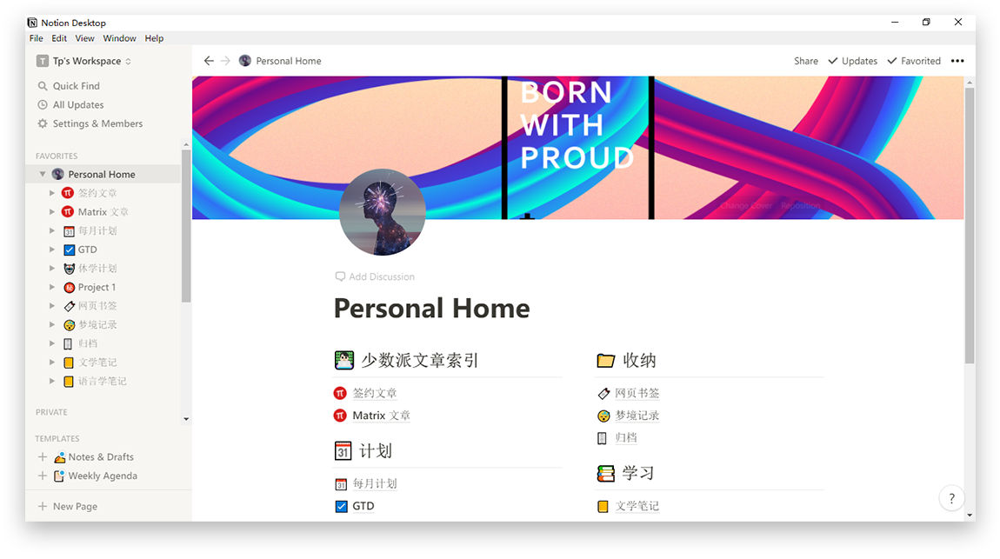
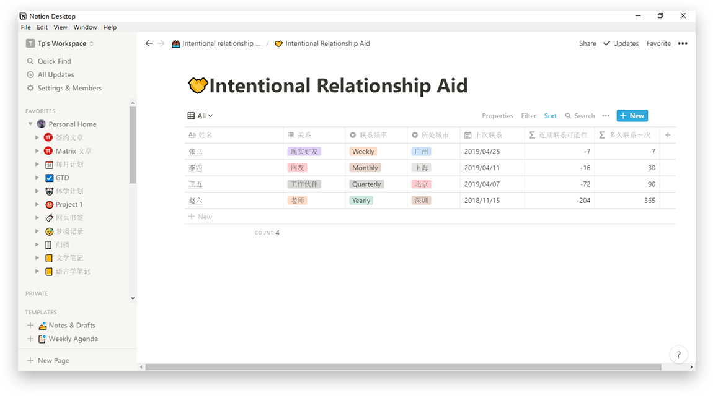
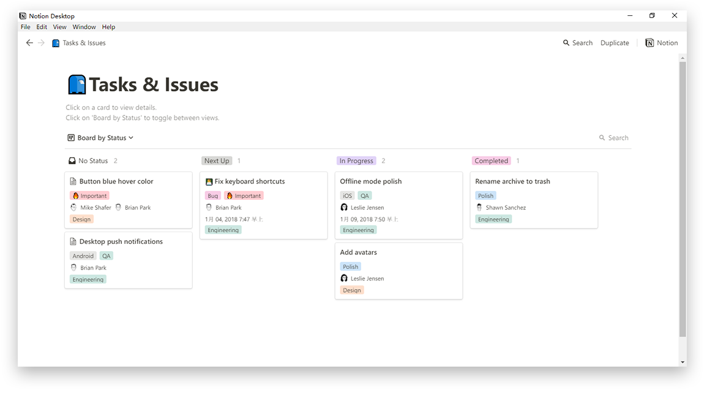
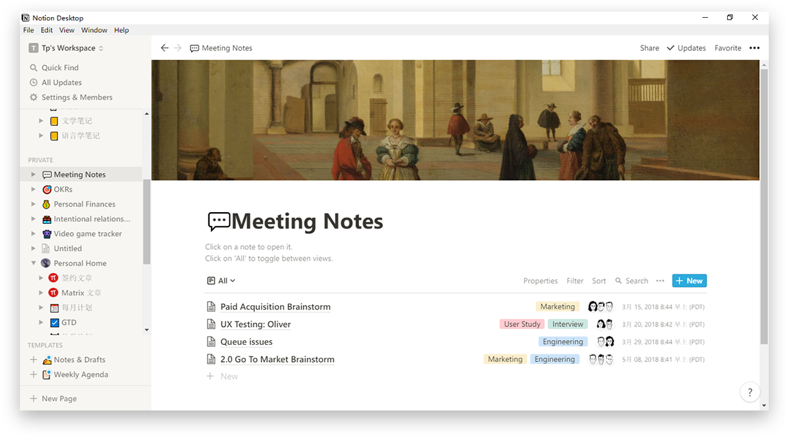

要说谁最了解 Notion，那么答案肯定是它自己。Notion 提供了涵盖了从个人生活到团队协作等各方面的模板，对 Notion 功能也应用得十分深入，方便我们可以直接套用。
如果你想将 Notion 打造为自己的工作区，你肯定希望所有页面都能井井有条地整理好，在你需要时，可以迅速找到特定页面。这时候，一个可以将所有页面分门别类放置好的主页显得尤为重要。
Notion 官方为我们分别准备了 个人主页 和 团队主页 的模板，我们可以参照它来布局自己的 Notion 主页。
这个模板的原理并不复杂，仅仅是用标题（Header）和页面（Page）将不同类别的页面归纳好，让你的工作区变得更有条理。主页模板的用法也非常简单，只要按照一定的格式将页面整理好，就能得到一个井井有条的主页。
在当今社会，人与人之间的关系逐渐疏远。我们的微信里添加了许多好友，可真正有交集的却寥寥无几。Intentional Relationship Aid 是用于管理人际关系的一个模板，它可以帮助我们清晰地查看到自己与好友的互动情况。
这个模板用到了 Notion 的表格（Table）及函数功能（Formula），表格可以让我们清晰地看到所有好友的姓名、关系和联系频率等信息。每一行代表一个好友，点击好友名称即可打开一个单独的页面，你可以在这里添加好友的联系方式或是照片。
这个模板还通过函数做出了「近期联系的可能性」及「多久联系一次」的推算，它将根据你为好友设置的联系频率和上次联系时间进行运算。作者将具体函数放在了模板中，你可以查看并根据自己的需求进行修改。
Tasks and Issues 是 Notion 官方提供的一个看板式任务管理模板，如果你用过 Trello 或 Teambition，相信你对这个模板不会陌生。看板式任务管理可以让我们更加清晰地看到每个任务的执行情况。
这个模板不但支持对任务进行分类管理，还支持多人协作，你可以将任务分配给相应的同事。此外，你也可以通过自带的过滤器来筛选出分配给自己的任务。你也可以将其打造成自己的任务管理系统，时刻追踪任务完成情况。
在看板的时间设置中，你也可以添加提醒，让自己不再错过重要的任务。
Meeting Notes 是一个会议记录的模板，它将以列表的形式把会议记录整理起来，你可以清晰地看到与具体会议相关的人员、部门。每一个会议都是一个单独的页面，你可以在页面中进行会议记录和归纳。
会议记录同样支持过滤，你可以按照部门、时间等条件筛选出符合规则的记录。除了套用这个模板进行会议记录外，我们也可以在这个模板的范例里学习到一些会议记录的方式和技巧。